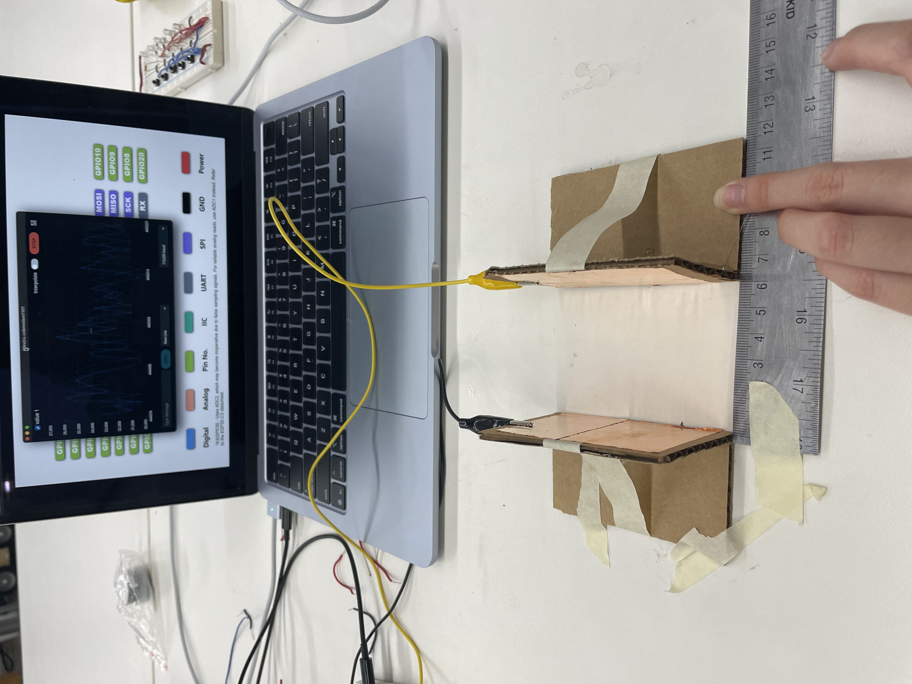
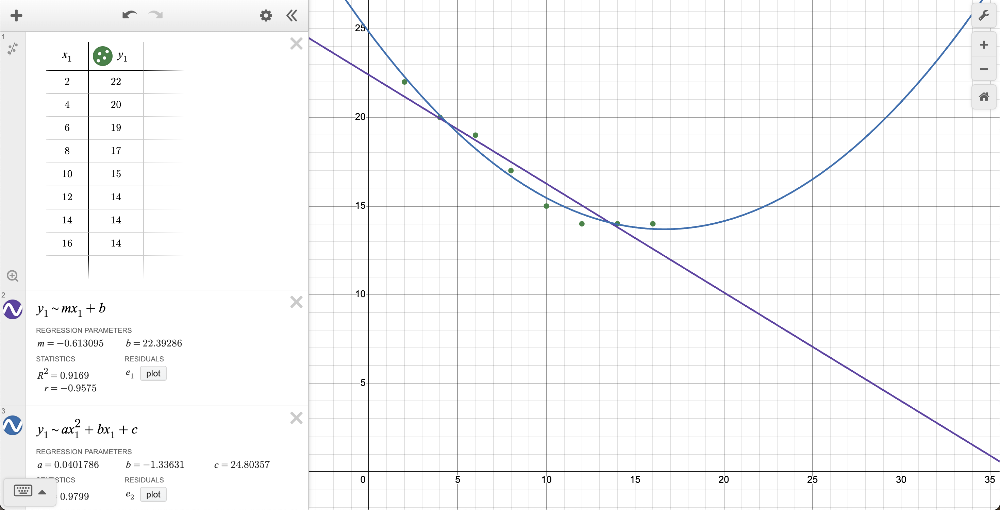
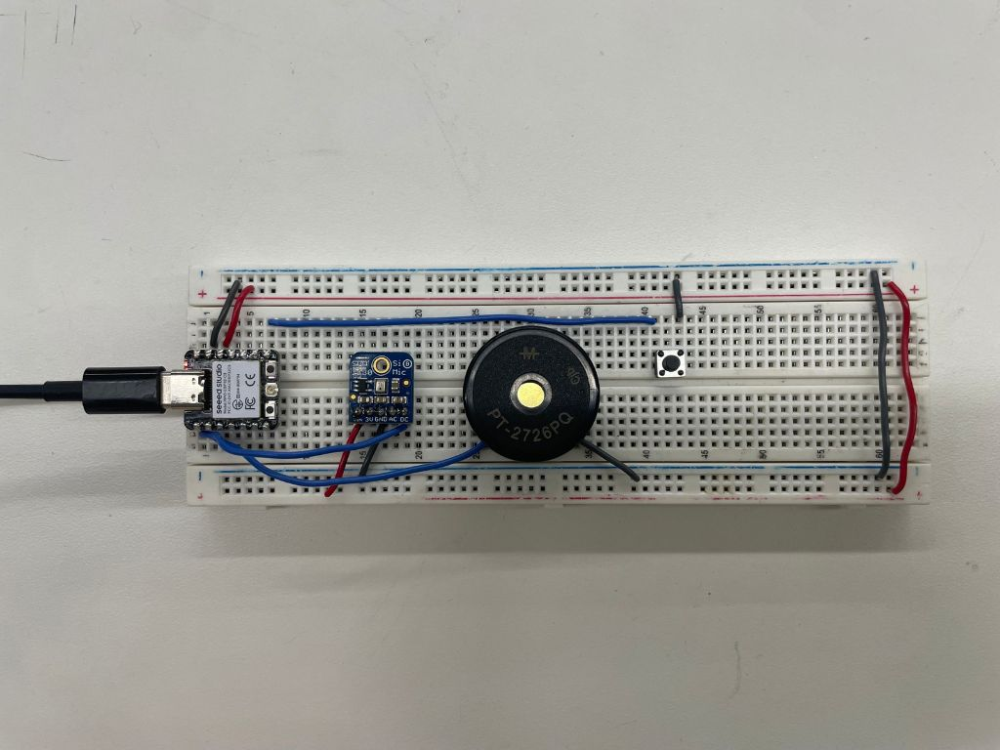
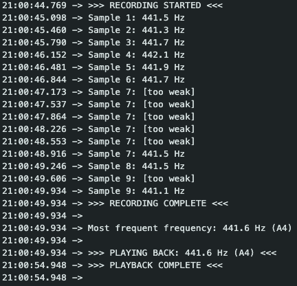
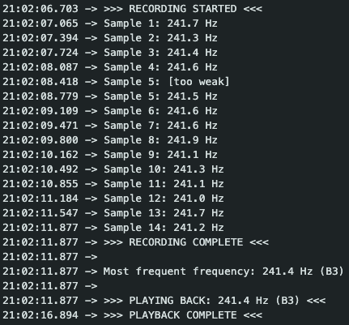

<div class="textcontainer">
<p class="margin"> </p>
<h3>Week 6: Electronic Inputs</h3>
<h4>Assignment 1: Capactive Sensor<h4>
<p> During class, my team was assigned to make a distance sensor. To make our capacitive sensor, we put capacitive tape on
two pieces of cardboard and made a stand for each one. We then attached our sensors to a breadboard using alligator clips.
I've recreated our sensors below:
</p>

<p> After, I recorded the values read by our sensors and plotted them on a graph and found a line of best fit. Note: the x-values
are in cm and the y-values below are scaled down by 1,000 for the purposes of graphing. After 14 cm, I noticed the read values
from the sensors started to plateau around 14,000. This could just be the result of our capacitive sesnsors being too far apart
to detect anything from one another.
</p>

<p class="margin"> </p>
<h4>Assignment 2: Another Sensor</h4>
<p> I've made a quite a few musically-inclined friends recently and they all have perfect pitch. Inspired them (and to see if they
really have perfect pitch), I wanted to use a microphone for my sensor. My idea was to use the microphone to record the frequency
of sound input (when the user clicks a button) and then transcribe that frequency into its corresponding music note. The pizeo buzzer
will then play that sound frequency back to the user.
</p>
<h5>Materials:</h5>
<ul>
<li>ESP32 XIAO</li>
<li>Adafruit SPW 2430 MEMS Microphone</li>
<li>PT-2726PQ Piezo Buzzer</li>
<li>Button</li>
<li>Breadboard</li>
<li>Wires</li>
</ul>
<h5>The Board:</h5>
<p>The first step was to make sure each individual component work. I started by wiring up my breadboard and running test code for the mic,
piezo buzzer, and button to make sure each component was functional and wired properly.
</p>

<p>Afterwards, I had to figure out how to record sound frequency accurately from the microphone. Normally, the mic does not record the
frequency of the sounds that it picks up. In order to pick up sound frequncy, I used the "arduinoFFT" library, which uses the Fast
Fourier Transform (FFT) algorithm to pick up the frequency of sound waves.
I don't know exactly how the math works, but I was able to implement the functions from the library using tutorials, examples, and
searching online.
</p>
<h5>The Code:</h5>
<pre><code class="language-cpp">
double detectFrequency() {
// Sample audio - collects 1024 readings every 250 ms
for(int i = 0; i < SAMPLES; i++) {
unsigned long start = micros();
vReal[i] = analogRead(MIC_PIN);
vImag[i] = 0; // Used for FFT math
while(micros() - start < sampling_period_us);
}
// Remove DC offset
double mean = 0;
for(int i = 0; i < SAMPLES; i++) {
mean += vReal[i];
}
mean /= SAMPLES;
for(int i = 0; i < SAMPLES; i++) {
vReal[i] -= mean;
}
// Run FFT - idk how the math works, I just followed examples and docs.
FFT.windowing(vReal, SAMPLES, FFT_WIN_TYP_HAMMING, FFT_FORWARD);
FFT.compute(vReal, vImag, SAMPLES, FFT_FORWARD);
FFT.complexToMagnitude(vReal, vImag, SAMPLES);
// Find dominant frequency
double maxMag = 0;
int maxIndex = 0;
for(int i = 2; i < SAMPLES/2; i++) {
if(vReal[i] > maxMag) {
maxMag = vReal[i];
maxIndex = i;
}
}
// Only return frequency if signal is strong enough
if(maxMag > MAGNITUDE_THRESHOLD) {
// Parabolic interpolation for better accuracy
double y1 = vReal[maxIndex - 1];
double y2 = vReal[maxIndex];
double y3 = vReal[maxIndex + 1];
double delta = 0.5 * (y3 - y1) / (2 * y2 - y1 - y3);
double interpolatedIndex = maxIndex + delta;
return (interpolatedIndex * SAMPLING_FREQUENCY) / SAMPLES;
}
return 0; // Signal too weak
}
</code></pre>
<p>Afterwards, I had to transcribe the frequency into their corresponding music notes.</p>
<pre><code class="language-cpp">
String frequencyToNote(double frequency) {
if(frequency < 20) {
return "---";
}
// A4 = 440 Hz is our reference (MIDI note 69)
// Formula: n = 12 x log2(f / 440) + 69 double noteNum = 12 x log(frequency / 440.0) / log(2) + 69;
int nearestNote = round(noteNum);
if(nearestNote < 0 || nearestNote > 127) {
return "Out of Range";
}
// Get note name and octave
int octave = (nearestNote / 12) - 1;
int noteIndex = nearestNote % 12;
String result = String(noteNames[noteIndex]) + String(octave);
return result;
}
</code></pre>
<p> From there, the code pretty much just involved getting the frequency to play back, taking input from the button,
and printing output the Serial montior. To see the full details of the code, including helper functions and more comments,
see the file below:
</p>
<a href="frequency_sensor.ino" download="frequency_sensor.ino">Frequency Sensor Code</a>
<p class="margin"> </p>
<h5>Demo:</h5>
<video controls width="650">
<source src="440_demo.mp4" type="video/mp4">
</video>

<p class="margin"> </p>
<video controls width="650">
<source src="240_demo.mp4" type="video/mp4">
</video>

<p>The recordings are generally pretty accurate. There is some variation in the number of samples since not all meet the threshold
to be recorded.
</p>
</div>